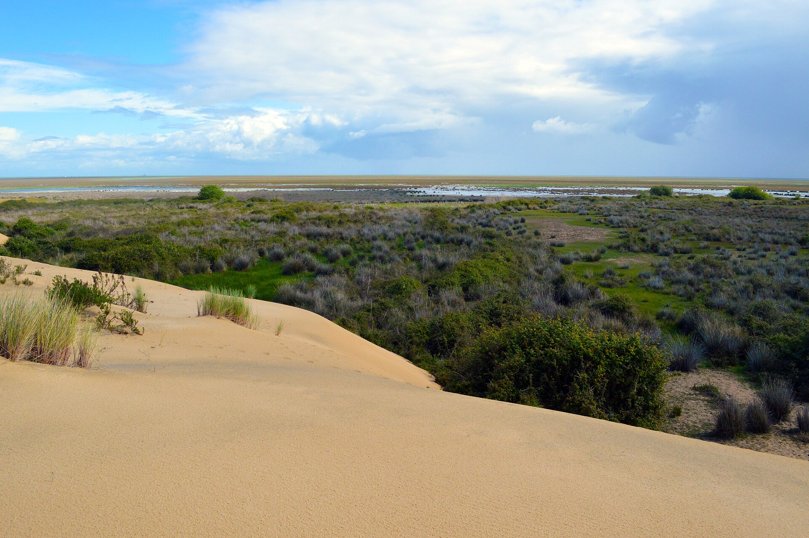
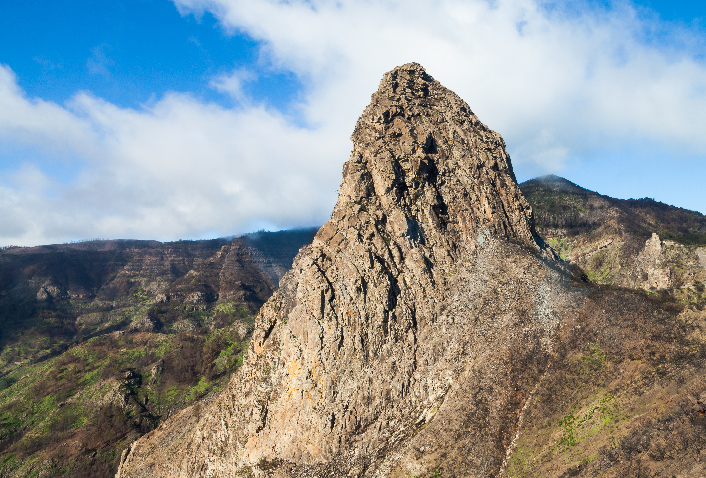
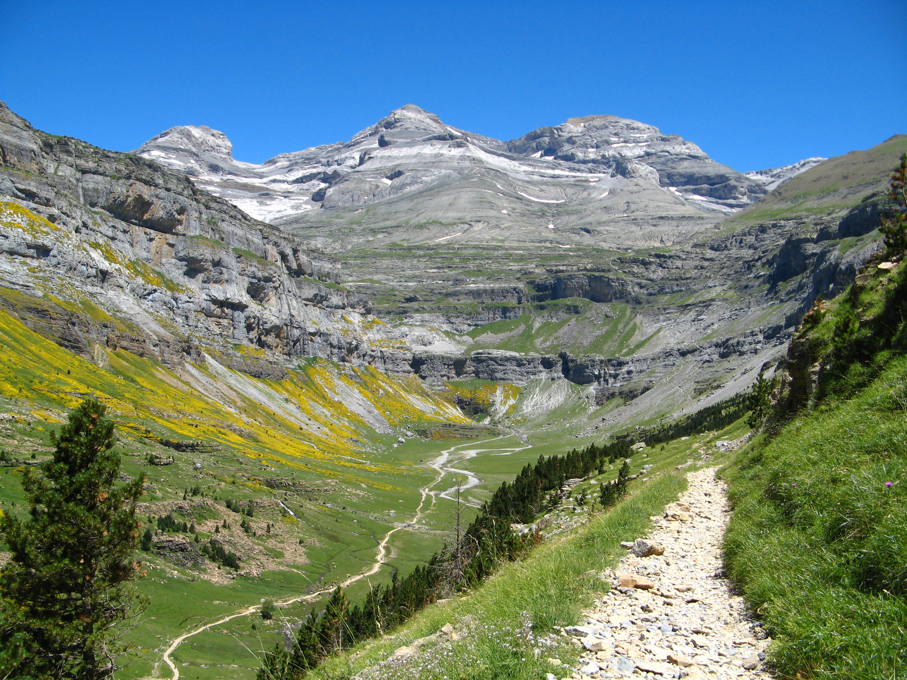

Llistat de Béns Naturals Nov 11, 2026  Vista marismes parc Donyana Parc Nacional de Doñana (Andalusia, 1994)  Parc Nacional de Garajonay Parc Nacional de Garajonay (Canàries, 1986)  Pirineus – Mont Perdut Pirineus – Mont Perdut (Aragó/Navarra, 1997)